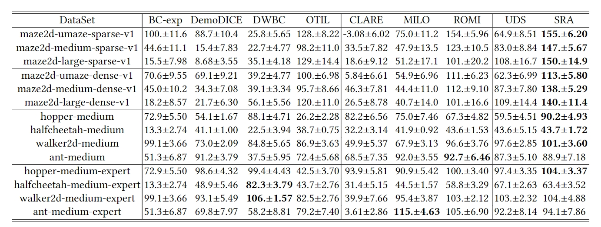
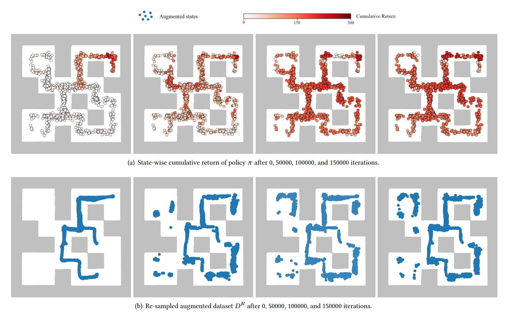

We evaluate SRA in D4L benchmark domains with 14 settings and provide the results.

We conduct the visualization to demonstrate the learning process in the Maze2D-Medium environment, inculding te state-wise cumulative return of the learned policy $\pi$ and the corresponding sampled augmeted dataset.Offline Reinforcement Learning with Reverse Model-based Imagination (ROMI) introduces the reverse dynamic model into the offline RL community, whose VAE network is empolied in our work to learn the reverse policy.
Offline Imitation Learning without Auxiliary High-quality Behavior Data firstly introduces the idea into the offline IL that leads the agent from expert-unobserved states to the expert-observed states. Its model-free solution BCDP is empolied in our work as a RL pipeline.
@article{shao2024oil,
author = {Shao, Jie-Jing and Shi, Hao-Sen and Guo, Lan-Zhe, and Li, Yu-Feng},
title = {Offline Imitation Learning with Model-based Reverse Augmentation},
journal = {KDD},
year = {2024},
}